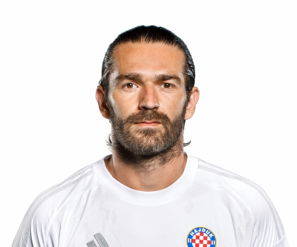

Marko Livaja
Profesionalni nogometaš

Kontakt
Email markolivaja@hajduk.hr
Web www.markolivaja.dev
Obrazovanje
Radno iskustvo
- Hnk Hajduk
- Las Palmas
- Inter
- Aek
Vještine
- Najbolji igrač Hnl-a
- Najbolji strijelac Hnl-a
- Najbolji dribler Hnl-a
- Njbolji ponižava kluba Hnk Rijeka
- Genije nogometa
Certifikati
- Najbolji igrač Prve HNL u izboru kapetana klubova Prve HNL: 2021. 2022
- Hajdučko srce: 2021./22.
- Najbolji igrač Prve HNL, Žuta majica Sportskih novosti: 2022., 2023.
- Trofej Nogometaš – Najbolji igrač Prve HNL/HNL: 2022.,[41] 2022./23.
- Trofej Nogometaš – Najbolja momčad godine Prve HNL/HNL: 2022.,[41] 2022./23.
- Najbolji strijelac Prve HNL u sezoni 2021./22., s postignutih 28 pogodaka u 34 prvenstvena nastupa.
- Najbolji strijelac Prve HNL u sezoni 2022./23., s postignutih 19 pogodaka u 34 prvenstvena nastupa.